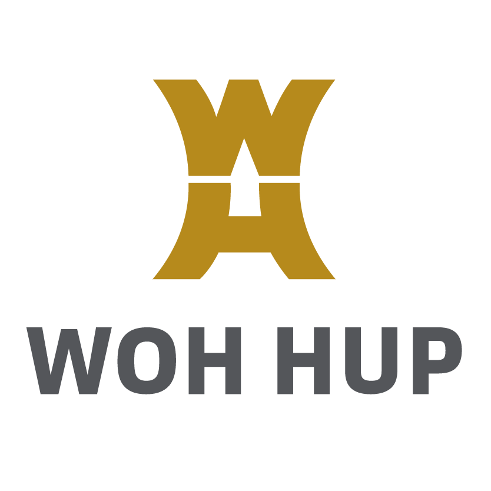

Skip to content

THE KEYS
A CONSTRUCTION ADVENTURE
The story
Missions
Gameplay
Gallery
Play Godot demo
↗
CHOOSE YOUR ADVENTURE
OPTION 01
The Five Keys
GODOT
OPTION 02
The Eight Keys
UNREAL
The Five Keys & The Eight Keys
Enable JavaScript to switch adventures and explore the missions.
Play The Five Keys browser demo
✕
←
→